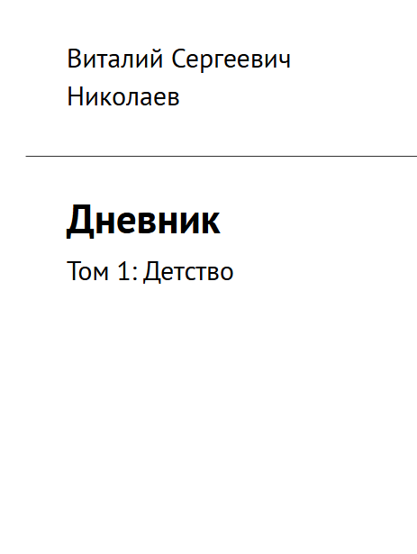
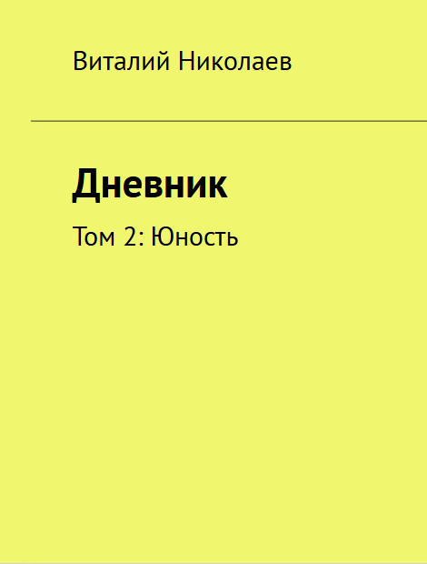
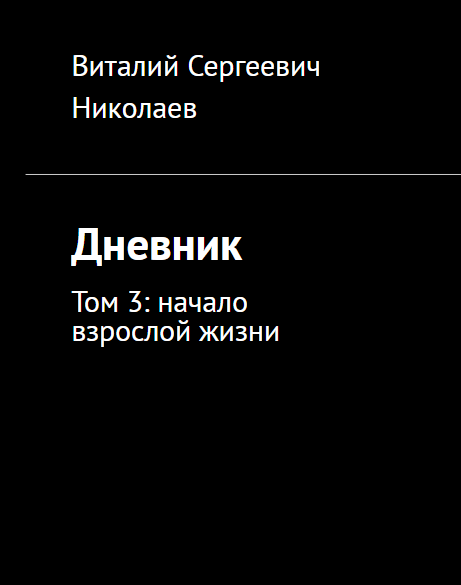

Лампы под потолком горели ровно наполовину. Вторую половину съела тень — такая же старая, как и сам бар. Где-то в углу хрипел саксофон, имитируя джаз. Это всего лишь маленькая история двух маленьких людей. .
ПИСАТЕЛЬ
Пишу книги, фанфики. Делаю визуальную новеллу. Писал музыку.
Лампы под потолком горели ровно наполовину. Вторую половину съела тень — такая же старая, как и сам бар. Где-то в углу хрипел саксофон, имитируя джаз. Это всего лишь маленькая история двух маленьких людей. .

Тут представлены как интересные идеи, так и бредовенькие. Некоторые с сатирой, некоторые ну вот такие получились. Вообще было около двухсот идей, но: 1. Это идеи паразиты, которые нужно вживлять в другие произведения и нельзя реализовать в моно. 2. Это идеи которые слишком хороши для этого мелкого сборника, и которые я хочу реализовать более детально, таких получилось тридцать, не включая фанфиков. 3. Некоторые идеи не зашли. А ещё мне пришлось убрать смайлики. Дрова рубят щепки летят.

Сборник стихов, который я собрал после армейского эпизода. Где-то 99% всех стихов я написал и сочинил или сочинил и написал тогда же. В сборнике довольно много sad~контента.

Данный сборник включает в себя те немногие рассказы, которые и непроходняк, и требуют личного написания, но и не перспективные для отдельной реализации. В этом сборнике вас ждут захватывающие (минут на 10) приключения и многое другое, что мне лень описывать. :) Берегите себя, никогда не сдавайтесь и приятного чтения!

Сборник композиций — это сборник композиций, всё понятно. Процесс создания этих композиций был довольно весёлым, местами непонятным, но оно того стоило. Кстати черный цвет преобладает, потому что он у меня ассоциируется с дисциплиной, я когда-то давно купил браслет с надписью «Никогда не сдавайся», но она со временем стёрлась. Кхм-кхм, так вот, по нотам лишь единицы смогут понять и сыграть всё это, так что в конце книги будет ещё ссылка на миди и мп3 файлы.

«Дневник. Том 1: Детство» — воспоминания о ранних годах моей жизни, от рождения до колледжа. Вряд ли данное произведение будет иметь хоть какой-то спрос, но в будущем я точно захочу вспомнить всё это. Да и возможно мои близкие тоже, хотя это и не их воспоминания. Стиль написания опирается на разговорный, то есть с начала была записана аудиозапись, потом с помощью ИИ переведена в текст, немного дополнена в ручную и с помощью ИИ была проведена корректура. В следующем томе будет намного больше всего!

Второй том личного дневника. В него вошли учеба в колледже и служба в армии. Множество мелочей было потерянно, но основное тут.

Третий том личного дневника. В нём прописаны мои приключения после декабря 2022 до 2026. То есть после армии. Рекомендуется к чтению близким людям, при ностальгии. Попробовал в этот раз писать с помощью программы на телефоне, которая конвертирует аудиопоток в текст. Плюс редактура через deepseek.

Аффина́ж (фр. affinage, от affiner — «очищать») — металлургический процесс очистки некоторых тяжёлых металлов от примесей. И в этой книге раскрыта история этого процесса и техника безопасности.
Альбом из моих стихов наложенных на мои композиции.